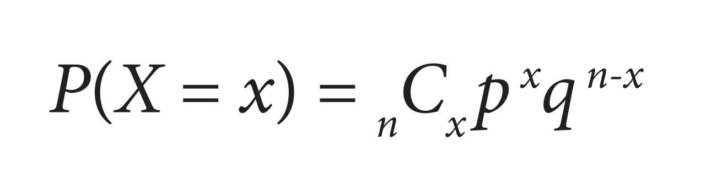
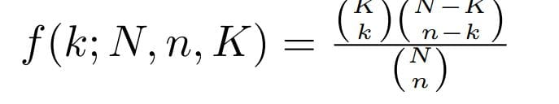

Competencia específica de la asignatura
Aplica los conceptos de la teoría de la probabilidad y estadística para organizar, clasificar, analizar e interpretar datos para la toma decisiones en aplicaciones de ingeniería biomédica, en computación y comunicaciones.
Tema 1: Estadistica descriptiva
- 1.1 Conceptos básicos de estadística:
- Definición: La estadística es la ciencia que se encarga de recopilar, organizar, analizar e interpretar datos para ayudar a tomar decisiones
- Teoría de decisión: Estudia cómo tomar las mejores decisiones bajo incertidumbre, utilizando conceptos de probabilidad y utilidad.
- Población: Se refiere al conjunto completo de individuos, objetos o mediciones de interés para un estudio.
- Muestra aleatoria: Es un subconjunto de la población, seleccionado de manera que cada elemento de la población tenga la misma probabilidad de ser elegido.
- Parámetros aleatorios: Son características numéricas de la población que se desconocen y se deben estimar a partir de la información de la muestra.
- 1.2 Decricion de datos
- Datos agrupados y no agrupados: Los datos no agrupados individuales, sin agrupar en intervalos o categorías. y loa datos agrupado son organizados en intervalos o categorías.
- Frecuencia de clase: Se refiere al número de observaciones que caen dentro de cada intervalo o categoría de un conjunto de datos agrupados.
- Frecuencia relativa: Es la proporción o porcentaje de observaciones que caen dentro de cada clase o intervalo de un conjunto de datos agrupados.
- Punto medio: De un intervalo de clase es el valor que se encuentra en el centro del intervalo.
- Limites: De la clase son los valores que definen los extremos de cada intervalo o categoría en un conjunto de datos agrupados.
- 1.3 Medidas de tendencia central
- Media aritmética: Es una medida de tendencia central que se calcula sumando todos los valores de un conjunto de datos y dividiendo el resultado entre el número total de datos.
- Media geométrica: Es una medida de tendencia central que se calcula multiplicando todos los valores de un conjunto de datos y luego extrayendo la raíz n-ésima, donde n es el número total de datos.
- Media ponderada: Es una medida de tendencia central que se calcula multiplicando cada valor por un factor de ponderación y luego dividiendo la suma de estos productos por la suma de los pesos.
- Mediana: Es una medida de tendencia central que representa el valor central de un conjunto de datos ordenados.
- Moda: Es una medida de tendencia central que representa el valor que aparece con mayor frecuencia en un conjunto de datos.
- Medidas de dispersión: Cuantifican qué tan dispersos o alejados están los datos de la medida de tendencia central.
- Varianza: Es una medida de dispersión que indica cuánto se dispersan los datos con respecto a la media.
- Desviación estándar: Es la raíz cuadrada positiva de la varianza.
- Desviación media: Es una medida de dispersión que se calcula como el promedio de las diferencias absolutas entre cada valor y la media.
- Desviación mediana: Es una medida de dispersión que se calcula como el promedio de las diferencias absolutas entre cada valor y la mediana.
- Rango: Es una medida de dispersión que se define como la diferencia entre el valor máximo y el valor mínimo de un conjunto de datos.
- 1.4 Parámetros para datos agrupados.
- 1.5 Distribución de frecuencias.
- 1.6 Técnicas de agrupación de datos.
- 1.7 Técnicas de muestreo.
- Ejercicios
Tema 2: Fundamentos de la teoria de probabilidad
- 2.1 Tecnicas de conteo:
- 2.1.1 Principio aditivo: Establece que la probabilidad de que ocurra uno de varios eventos mutuamente excluyentes es la suma de las probabilidades individuales de cada evento.
- 2.1.2 Principio multiplicativo: Establece que la probabilidad de que ocurran dos o más eventos independientes de forma simultánea es igual al producto de las probabilidades individuales de cada evento.
- 2.1.3 Notación Factorial: Es una forma concisa de representar el producto de una serie de números naturales consecutivos.
- 2.1.4 Permutaciones: Es una reordenación de los elementos de un conjunto.
- 2.1.5 Combinaciones: Se refiere a la selección de un subconjunto de k elementos a partir de un conjunto de n elementos, sin importar el orden.
- 2.1.6 Diagrama de Árbol: Es una representación gráfica que se utiliza comúnmente para visualizar y analizar problemas de probabilidad y toma de decisiones
- 2.1.7 Teorema del Binomio. Es una fórmula matemática que permite expandir y calcular los coeficientes de un binomio elevado a una potencia entera positiva.
- 2.2 Teoría elemental de probabilidad.
- 2.3 Probabilidad de Eventos:
- Definición de espacio muestral: Representa el conjunto de todos los posibles resultados o desenlaces de un experimento aleatorio.
- Definición de evento: Se define como un subconjunto del espacio muestral que representa un resultado o conjunto de resultados de un experimento aleatorio.
- Simbología: Se utilizan diversos símbolos y notaciones para representar conceptos y operaciones.
- Unión: Permite analizar la ocurrencia de uno u otro evento, o ambos
- Intersección: Permite analizar la ocurrencia simultánea de dos eventos.
- Diagramas de Venn: Son una representación visual de las relaciones entre conjuntos o eventos.
- 2.4 Probabilidad con Técnicas de Conteo:
- Axiomas: Son un conjunto de principios básicos y fundamentales que definen las características y propiedades de la probabilidad.
- Teoremas: Son proposiciones que se pueden deducir a partir de los axiomas de probabilidad y que permiten ampliar y profundizar en el entendimiento de los conceptos y propiedades de la probabilidad.
- 2.5 Probabilidad condicional:
- Dependiente: Se refiere a la situación en la que la ocurrencia de un evento está influenciada o depende de la ocurrencia de otro evento.
- Independiente: Se refiere a la situación en la que la ocurrencia de un evento no afecta ni depende de la ocurrencia de otro evento
- 2.6 Ley multiplicativa
- 2.7 Eventos independientes:
- Regla de Bayes: Permite determinar la probabilidad de un evento dado que ha ocurrido otro evento.
- Ejercicios
Tema 3: Variables Aleatorias.
- 3.1 Variables aleatorias discretas:
- 3.1.1 Distribución de probabilidad en forma general: Es la función que asigna probabilidades a cada uno de los posibles valores de la variable aleatoria discreta.
- 3.1.2 Valor esperado: Es el promedio ponderado de los valores posibles, usando las probabilidades como pesos.
- 3.1.3 Variancia, desviación estándar: La variancia mide la dispersión de los valores en torno a la media. Y la desviación estándar es la raíz cuadrada de la variancia.
- 3.1.4 Función acumulada. Es la probabilidad de que la variable aleatoria tome un valor menor o igual a un cierto valor x.
- Video explicando: Variables aleatorias discretas
- 3.2 Variables aleatorias Continuas:
- 3.2.1 Distribución de probabilidad en forma general: Se representa mediante una función de densidad de probabilidad f(x), cuya integral da la probabilidad de que la variable caiga en un intervalo.
- 3.2.2 Valor esperado: Es la media μ, calculada como la integral de x ponderada por f(x).
- 3.2.3 Variancia, desviación estándar: La variancia σ^2 mide la dispersión respecto a la media. Y la desviación estándar σ es la raíz cuadrada de la variancia.
- 3.2.4 Función acumulada: Es la función de distribución F(x), que da la probabilidad de que la variable tome un valor menor o igual a x.
- 3.2.5 Cálculos de probabilidad: Usando f(x) y F(x) se pueden calcular probabilidades de que la variable tome valores en ciertos intervalos.
- Video explicando: Variables aleatorias continuas
Tema 4: Distribuciones de probabilidad.
- 4.1 Función de probabilidad: Describe la probabilidad de que una variable aleatoria discreta tome diferentes valores.
- 4.2 Distribución binomial: Modela el número de éxitos en una secuencia de n experimentos de Bernoulli independientes con la misma probabilidad de éxito.
- Media: np
- Varianza: np(1 - p)
- Formula: 
- 4.3 Distribución hipergeométrica: Describe la probabilidad de obtener x éxitos en n ensayos sin reemplazo de una población finita.
- Media:
- Varianza:
- Formula: 
- 4.4 Distribución de Poisson: Modela el número de eventos independientes que ocurren en un intervalo de tiempo o espacio dado.
- Media:
- Varianza:
- Formula:
- Video: explicado ejercicio de la distribuccion de poisson
- 4.5 Distribución normal: Es la distribución más importante en estadística, útil para modelar fenómenos continuos.
- Media:
- Varianza:
- Formula:
- 4.6 Distribución T-student: Se usa cuando la desviación estándar poblacional es desconocida y se dispone de una pequeña muestra.
- 4.7 Distribución Chi cuadrada: Describe la distribución de la suma de los cuadrados de variables aleatorias normales estándar independientes.
- 4.8 Distribución F: Modela el cociente de dos variables aleatorias independientes que siguen una distribución Chi cuadrada.
Tema 5: Regresión y Correlación
- 5.1.1 Diagrama de dispersión: Representación gráfica de los pares de valores (x, y) de dos variables. Permite identificar patrones y relaciones entre variables.
- 5.1.2 Regresión lineal simple: Modelo matemático que describe la relación lineal entre una variable dependiente y una variable independiente.
- 5.1.3 Correlación: Medida del grado de asociación lineal entre dos variables. Varía entre -1 y 1.
- 5.1.4 Determinación y análisis de los coeficientes de correlación y de determinación: El coeficiente de correlación (r) mide la fuerza de la relación lineal. El coeficiente de determinación (r^2) indica qué porcentaje de la variabilidad de y se explica por la variabilidad de x.
- 5.1.5 Distribución normal bidimensional: Modelo de probabilidad que describe la distribución conjunta de dos variables aleatorias normales.